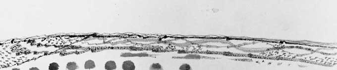

En 1950, Brô, cherche un endroit où s’installer et peindre. Après un périple dans le Haut-Var, il arrive à la presqu’île de Ramatuelle. Il aime tout de suite ses champs de vigne, qui à l’époque descendent encore jusqu’à la mer, ses étendues de nasques, d’ajoncs et de bruyères arborescentes et surtout la silhouette des pins parasol, au sommet des collines. A deux kilomètres du village, il trouve un cabanon, avec un puits, et, en hiver, une petite cascade. Il y dort, d’abord à ciel ouvert, et passe plus d’un an à le reconstruire. Il projette un moment d’y établir un phalanstère d’artistes, comme Van Gogh dont il a déjà lu plusieurs fois le journal.
Lorsqu’il regarde les collines entourées de toutes parts par la mer, se superposent devant ses yeux, les gravures d’Hokusaï et d’Hiroshigué. En 1952, il m’écrit : « Je suis dans mon petit Japon et j’y peins des ciels roses… ». Il s’y sent bien et vit là quelques mois heureux avant de partir à contre-coeur au service militaire.
Ses toiles et ses dessins surtout, portent presque tous la marque de ces horizons de collines souples qui montent haut dans le ciel. On y lit l’histoire d’un monde soustrait aux combats de l’existence. Le pinceau ou la plume, insouciants, peuvent s’abandonner au libre plaisir du mouvement, ce même plaisir qu’a eu l’œil, d’abord, à suivre les contours de ces collines si nettement dessinées par la lumière. D’où le caractère extrêmement calligraphique de ses œuvres.
Douze ans plus tard, la famille s’est agrandie. L’atelier de la place Dauphine donnant sur la Seine est beau mais petit. L’espace est tout imaginaire et Brô aspire à un grand espace tranquille où il puisse travailler. Il découvre alors dans le Hiémois, à l’extrême limite du Perche, Courgeron. Isolé, entre forêt et herbages fermés de haies d’épines et d’ormes, mais s’ouvrant largement sur une vue aussi vaste qu’un horizon marin. C’est le début de la vallée d’Auge et encore, des collines, des collines, à l’infini.
Brô n’était pas un peintre de plein air. Attentif aux modifications les plus subtiles qu’apportent aux paysages la succession des heures et des saisons, il se promenait peu. Souvent, de son atelier à l’allée des tilleuls et de l’allée des tilleuls à son atelier. Il a fait peu d’études d’après nature. Seulement, il prenait des notes. Comme le recommande le Vieil Hokusaï, il puisait dans les registres de sa mémoire.
Il peint dans son atelier, la nuit très souvent, au moment où le profond silence favorise la concentration ; au début, entouré de cinq à six lampes à pétrole. Sa science de la couleur le lui permet. Sa vision est intérieure. Pourtant cet horizon, contemplé ou entrevu, jours après jours, le captive jusqu’à devenir un centre d’intérêt constant, on pourrait presque dire un thème pictural. Ce thème, Brô le prend et le reprend, inlassablement, d’une toile à l’autre et, chaque fois, le renouvelle. Il y a dans cet éternel retour, plus qu’une obsession, une sorte de défi ascétique, une renonciation aux facilités des moyens extérieurs de renouvellement, qui obligent à descendre aux régions les plus profondes de l’être.
L’horizon, dans un paysage, est la conséquence de l’espace. Pour un tableau, il en est la condition. L’horizon est à la fois un lieu d’éloignement-celui au delà duquel l’œil ne peut plus porter- et un lieu de réunion et de passage – celui où la terre semble rejoindre le ciel.
En s’éloignant, les objets - dans un paysage, les arbres, les haies, les chemins et les champs - se transforment. Changeant de forme, ils changent de nature. D’abord individualisés, chargés des séductions que leur a accordé la nature, ils perdent peu à peu leur taille, se dépouillent des détails qui les caractérisent et ne gardent, à l’extrême, que le trait essentiel à leur reconnaissance : ils passent ainsi du concret à l’abstrait, de l’objet au signe, puis du signe au symbole. Ils deviennent lettres d’une écriture et doivent se plier à une volonté d’organisation. Dans certaines toiles, les formes, que l’horizon attire du plus proche au plus lointain, finissent par disparaître dans un ciel totalement vide où ne règne que l’énergie pure de la couleur.  Je croit que c'est ce passage du monde la terre au monde de l’air, du Plein au Vide, de l’univers visible dans l’univers invisible qui intéressait Brô aux horizons.
Ce passage, parfois serein, parfois convulsif, Brô l’écrit dans ces lignes, la plupart du temps médianes, qui traversent ses toiles. Elles m’apparaissent comme le signe d’un juste partage entre les choses d’ici et de là bas. Une tentative de conciliation des contraires. Cette tentative, Brô l’a faite en tant que peintre, par le trait et par l’énergie vibratoire de la couleur.
Brô avait aimé, un jour, que je lui dise : "Ce qui est agréable avec les artistes, c’est qu’ils vous donnent des nouvelles d’ailleurs."
M. Brault.
Je croit que c'est ce passage du monde la terre au monde de l’air, du Plein au Vide, de l’univers visible dans l’univers invisible qui intéressait Brô aux horizons.
Ce passage, parfois serein, parfois convulsif, Brô l’écrit dans ces lignes, la plupart du temps médianes, qui traversent ses toiles. Elles m’apparaissent comme le signe d’un juste partage entre les choses d’ici et de là bas. Une tentative de conciliation des contraires. Cette tentative, Brô l’a faite en tant que peintre, par le trait et par l’énergie vibratoire de la couleur.
Brô avait aimé, un jour, que je lui dise : "Ce qui est agréable avec les artistes, c’est qu’ils vous donnent des nouvelles d’ailleurs."
M. Brault.
notes sur l'horizon - M. Brault.
